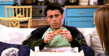
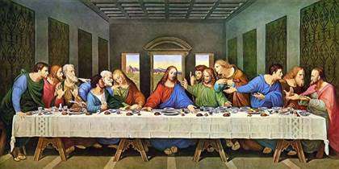
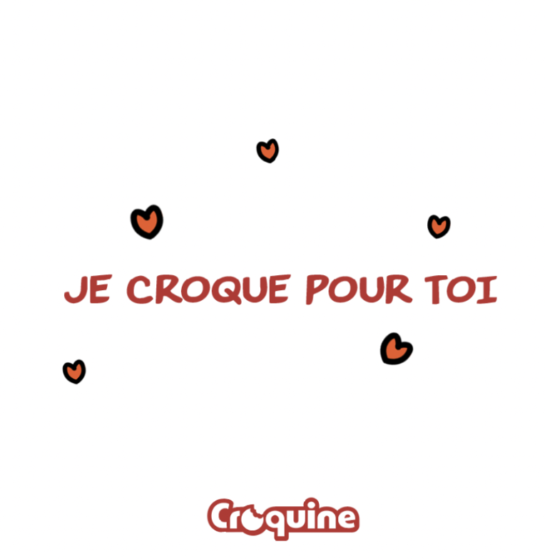
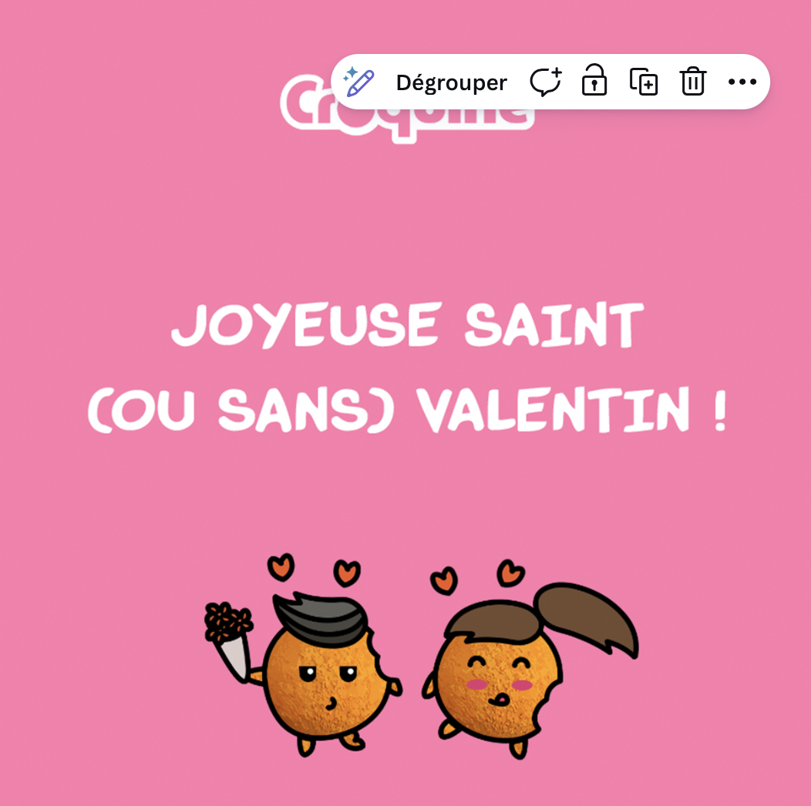
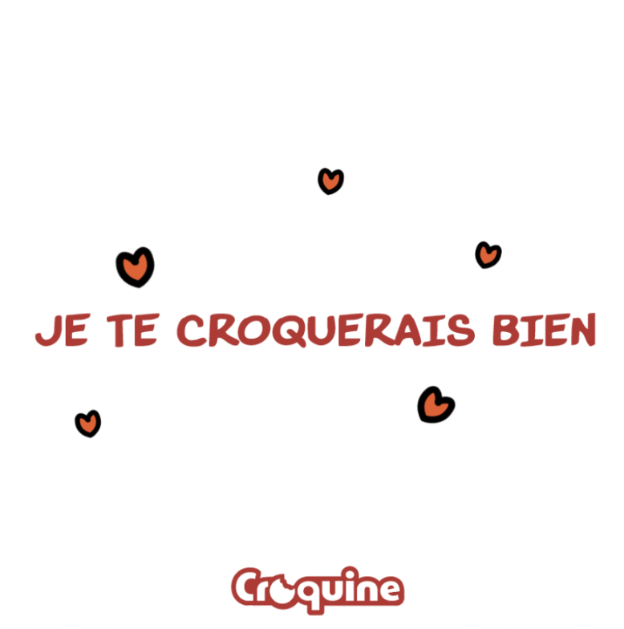
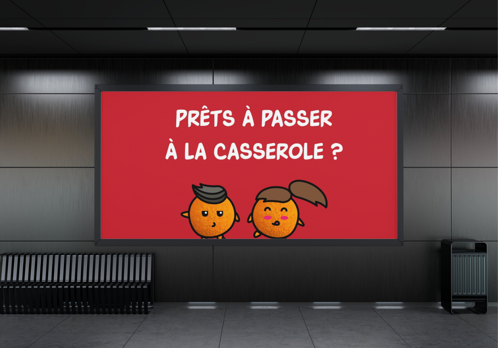
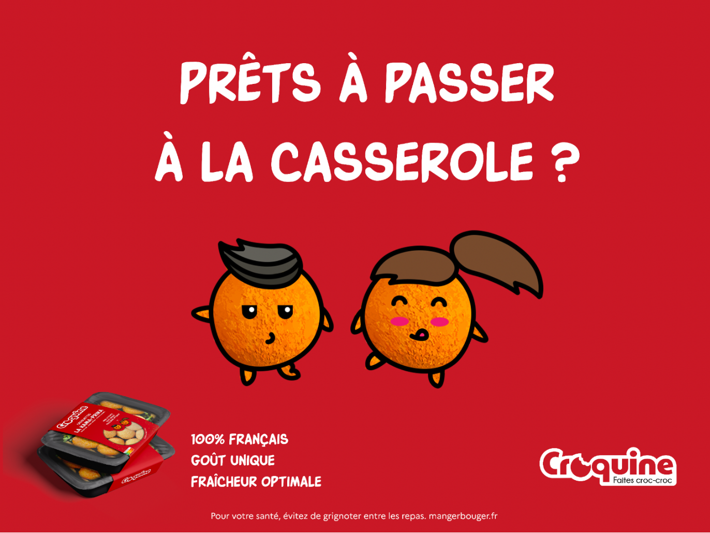

croquettes
sexy
Nom retenu
Croquine
Notre mission
RASSEMBLER LES PROCHES
AUTOUR D’UNE EXPÉRIENCE
CULINAIRE AMUSANTE
CONVIVIALE & CHALEUREUSE
Croquine, pourquoi ?
Croquette / croquant / coquin.e — un nom qui porte en lui le produit, le fun et la séduction. Trois mots pour une marque.
Food porn comme moteur
Rendre le produit désirable en jouant sur le visuel, la texture, le croquant — inspiré du food porn pour faire saliver avant de croquer.
L’univers osé
Des jeux de mots plus ou moins culottés, une communication décalée — pour surprendre, amuser et créer le bouche-à-oreille.
Les préliminaires d’une soirée
Les croquettes au cœur de l’apéritif convivial : avec des amis, des collègues, la famille — des récettes originales pour briser la glace et faire rire.
La tradition revisitée
Comme dans les vieux pots on fait les meilleures confitures : une recette française ancrée dans les traditions, remise à jour avec une bonne dose d’humour.
Clean label & 100% français
Une ligne de production courte et nationale, des ingrédients transparents — pour convaincre autant par les valeurs que par le goût.
Un logo
qui se croque
Le « O » de Croquine est remplacé par une croquette — pour présenter le produit dès la première lecture du nom.
Typographie à contour épais — gourmandise, lisibilité, et un caractère affirmé qui rappelle les emballages food premium.
Rouge carmin — le côté sexy de la marque sans être criard, en harmonie avec les codes de l’alimentation et de la séduction.
Sobriété graphique pour contrebalancer les prises de parole osées : le logo reste élégant, la com peut se lâcher.
Rouge carmin
#BE1E3B
Crème
#FFF8F2
Poudre
#F5E8EA
« Des croquettes qui conviennent parfaitement à votre apéritif ! »
« Faire frire les croquettes dans la casserole pendant 15 minutes. »
« Des croquettes pour vous en mettre plein la bouche à vos apéros ! »
« Plongez délicatement les croquettes dans la casserole et laissez monter la température pendant 15 minutes. »
Traits de caractère
Gourmande, culottée, raffinée, pétillante, impertinente
Le matin
« Cocoricro ! »
Dans la journée
« Hello les croquin.e.s ! »
Citation préférée
« N’en faire qu’une bouchée »

Si Croquine était un personnage
Joey Tribbiani
Toujours faim, adore manger avec les doigts. Drôle, sans artifices, un côté méditerranéen qu’on adore — et des amis pour la vie autour de la table.

Si Croquine était une œuvre d’art
La Cène
Le partage autour de la table, des aliments traditionnels sans artifices, et une tablée qui rassemble — Léonard de Vinci aurait adoré les croquettes.
Sujets de conversation
Le food porn
Les derniers potins
Éco-responsabilité
Le monde de demain
Traits de caractère
UNE HISTOIRE
CROC-CROC
On plante le décor : date improvisé à la maison, pas très doué.e pour la séduction. Comment l’impressionner ? C’est vrai cette fois cette personne vous plaît vraiment. Vous auriez dû acheter des fleurs et en plus y’a rien à manger… Direction le supermarché. Oh cette nouvelle marque a l’air sympa !
Notification sur votre Insta. Merde, elle arrive dans 5 minutes… Vous remontez vite fait chez vous, un dernier coup d’œil dans le miroir. Oh, elle est dans l’ascenseur !
Dans votre cuisine ça s’agite. La tension d’une rencontre, la température qui monte, l’entrée en ébullition, l’attente de la chaleur du premier baiser… C’est bon, l’apéritif est prêt et la sonnette résonne dans l’entrée.
Croquine, c’est le nouvel incontournable de vos soirées : la promesse d’une nouvelle scène pour vos papilles à chaque bouchée grâce à des recettes originales et culottées. Chez Croquine, on prend la vie du bon côté et on ne manque pas une occasion de rire et partager.
Nous nous engageons à proposer à nos croquin.e.s des produits de qualité au goût unique avec une diversité de recettes gourmandes, le tout dans une démarche clean label pour plus de naturalité et de transparence. La fraîcheur optimale de nos produits est possible grâce à une ligne de production courte et 100% française.
Maintenant que vous avez tous les ingrédients en main pour une bonne soirée,
il est temps de faire croc-croc !
Sept noms de recettes conçus dans l’esprit Croquine — jeux de mots, double sens, et toujours une pointe d’impertinence.
FELA’FEL
survoler pour la recette
FELA’FEL
Croquettes végétariennes à base de falafels — pour les croquin.e.s qui font du bien à la planète.
COCHONNERIE
survoler pour la recette
COCHONNERIE
Jambon et fromage — le classique qu’on assume pleinement, sans honte et sans retenue.
HEN-THAÏ
survoler pour la recette
HEN-THAÏ
Crevettes roses, basilic thaï et curry rouge — exotique et qui réchauffe.
KAMA-PRIKA
survoler pour la recette
KAMA-PRIKA
Poulet, paprika, oignon — une recette qui épice vos soirées avec tout le sérieux du Kama-sutra.
CHORIZ’HOT
survoler pour la recette
CHORIZ’HOT
Chorizo ibérique, paprika fumé, fromage espagnol — caliente, très caliente.
MAROILLES
COUCHE TOI-LÀ
survoler pour la recette
MAROILLES COUCHE TOI-LÀ
Recette régionale à base de maroilles — ch’est bien meilleur au nord.
BO-LOLO
survoler pour la recette
BO-LOLO
Croquettes à la bolognaise — parce qu’il y a des classiques qu’on ne se lasse pas de redécouvrir.
Saint-Valentin
Trois posts conçus pour la Saint-Valentin — dans le ton Croquine : séduction, double sens et foodporn pour transformer l’occasion en terrain de jeu.



Teaser métro — avant dévoilement

Affiche complète — révélation de la marque
